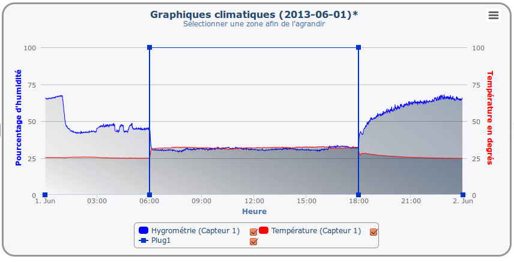
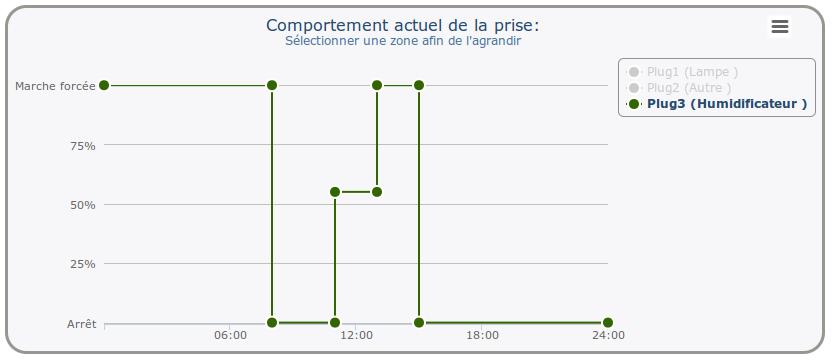
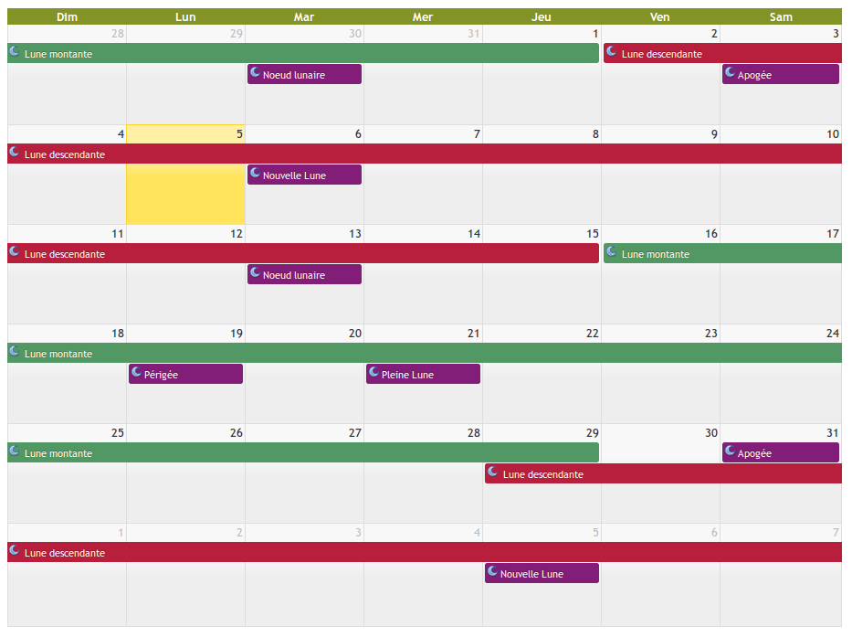
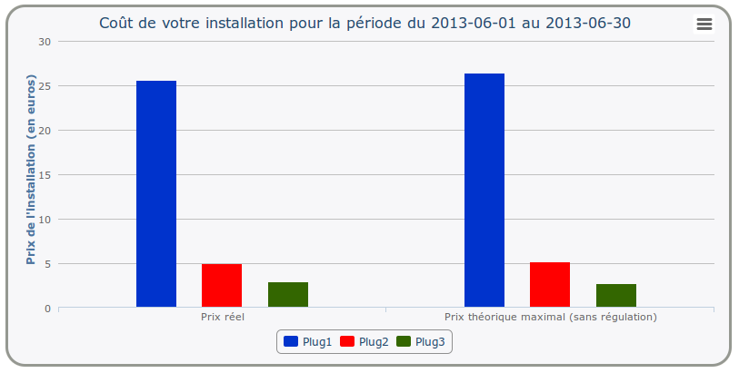

Téléchargement
Logiciel Cultibox
Le logiciel pour la gestion du climat de vos cultures
|
|
|
Téléchargement du logiciel: (Cliquez sur l'image correspondant à votre système pour télécharger le logiciel)
Présentation rapide
Données climatiques
Visualisation simple et rapide des enregistrements de vos capteurs:
- Données de température et d'hygrométrie
- Visualisation par jour ou pour un mois entier
- Comparaison des données avec un programme enregistré
- Visualisation de la puissance consommée.
Programation du comportement de vos prises
- Création des programmes de comportement de vos prises: définition d'une plage de marche/arrêt, utilisation des capteurs pour réguler le climat...
- Visualisation et comparaison des différents programmes grâce à des graphiques représentatifs
Calendrier de culture
 Création d'un calendrier permettant de marquer et suivre les étapes importante de vos cultures:- Création d'évènements manuellement à travers l'interface
- Utilisation de fichiers existants (calendrier lunaire, calendrier d'engrais...)
- Visualisation de ces évènements sur l'écran de la Cultibox
Consomètre
 Visualisation du coût de votre installation:- Calcul théorique en fonction des programmes enregistrés
- Calcul réel en fonction des relevés de la Cultibox
- Visualisation pour l'ensemble de votre installation, pour toutes vos prises ou pour une prise spécifique
... et bien plus encore!
|
|